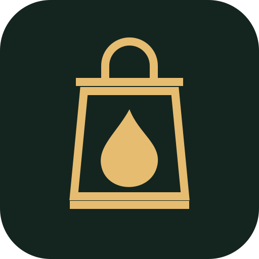

THE WOODLAND IS LISTENING

Your narrator and timekeeper for three councils of woodland mischief.
One shared phone. Real cards. Secret allegiances.
You handle abilities, flames and investigations.The lantern keeper handles the pace.
The opening uses your ElevenLabs recording. Other clips currently use text, or your device’s voice if selected. Device voices are not the character narrator and may need internet.
Load numbered MP3s (02–21) from your phone or computer. They stay on this device.
Timers start after speech. Resolve council actions privately, then tap Continue. Use +60 seconds only when your rules permit. A runoff cannot be extended. The app does not track powers or secret information.
On iPhone: open in Safari, use Share → Add to Home Screen. Keep the app visible during play. Leaving the app pauses it. Open once online to prepare the core app for offline use.
Checking offline support…